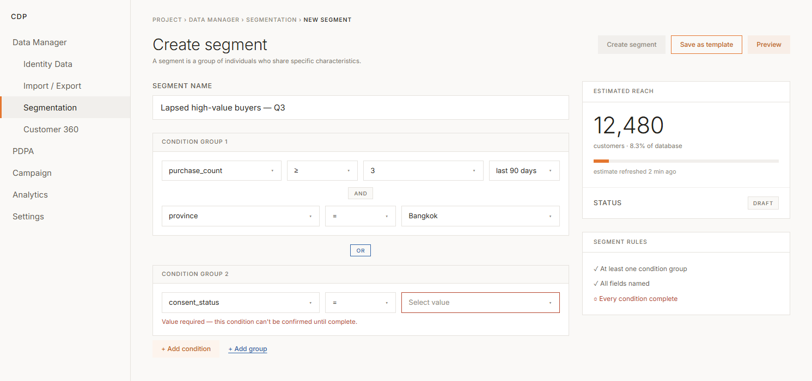
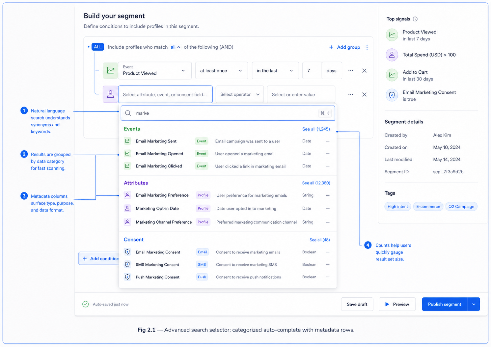
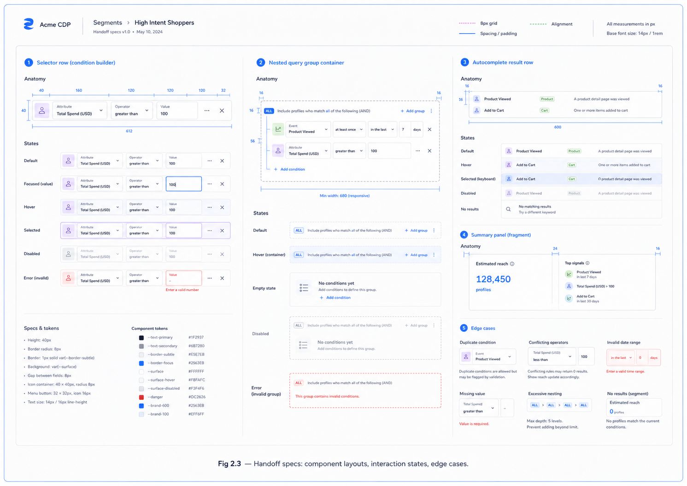

Enterprise SaaS · Customer Data Platformthe foundation, shown working2024
Customer Data Platform — Making an Existing CDP Legible
The product already existed, and it worked. I joined to make it legible — a component foundation, clearer structure, guided setup, and data & campaign workflows that Dev, PM, and QA could keep building without me in the room. Instead of screenshots of that foundation, this page re-sets its key plates in working HTML — inspect them directly.
Honesty noteSpecimens are re-set from the working Figma file. Token values are representative and the platform's typeface differs — the structure and relationships are what shipped.
Plates 01–03 · Tokens & atoms
A shared language starts smaller than a screen.
A CDP for marketing teams in Thai enterprise and SME businesses — 20+ product areas, zero rebuild budget, legacy schemas untouchable. Before touching feature screens I built the vocabulary every area would later speak: color in three ramps, type in six levels, buttons in five variants. When design, dev, PM, and QA name the same part the same way, every later conversation gets shorter.
Plate 01 — Color tokens3 ramps · neutral 15 steps, orange & blue 10 each
White / neutral · 0 → 1000
01000
Orange · 10 → 900 — platform primary
Blue · 10 → 900 — secondary / accent
Plate 02 — Type scale6 levels × L / M / S — 18 styles total
DisplayCustomer 360L · hero
HeadlineSegment ready to sendpage titles
TitleImport — mapping issuessections
LabelHard_ID · Soft_IDfields
BodyA segment is a group of individuals who share specific characteristics.content
Plate 03 — Button system5 variants · each with default / hover / active / disabled
Filled — primary CTACreate segment
Outlined — secondarySave as template
Ghost — subtlePreview
Link — inlineConvert to advanced
DisabledConfirm import
DefaultHoverActiveDisabled
Plates 04–05 · Molecules
The patterns every area borrowed.
Navigation, wayfinding, and progress — designed once, reused from Import to Journey Builder. The reorganized IA read as a mental model, not a menu: Data Manager, PDPA, Campaign, Analytics, Settings. And the four-step tracker below carries the platform's key UX decision — the Identity Data setup gate: hard_id and soft_id had to be configured before Import and Export unlocked, with gated empty states redirecting users to setup.
Plate 05 — Progress trackerthe component that carries the setup gate
✓Project detailsdone
✓Review Structure Controldone
3Setup Emailconfigure
4Setup Consentpending
TradeoffGating adds friction on day one. Un-gated imports produce unmatched customer records that are far more expensive to fix later.
Plates 06–07 · Organisms
The complex parts became components too.
Journey automation and RFM scoring are where a design system usually gives up and lets every screen be bespoke. Here they were componentized — 12 node types with one strict completeness rule, and an RFM set covering config tables, the donut, and seven customer groups across a nine-state flow.
The same sets, photographed in the wild — assembled into the segmentation workspace, the advanced search selector, and the handoff specs that Dev, PM, and QA continued from. Data workflows followed one rule: show the state of the data, not just the data — the Import flow alone covered 55 frames of upload, mapping, cell-level errors, and reusable templates.

Fig. 1 — Search-advanced set + tags + buttons, assembled into the segment workspace.

Fig. 2 — Dropdown, table, and filter sets in the condition selector.

Fig. 3 — The same components, specified: states and input adapters per data variable.
Component set
Where it landed
Search-advanced
Segmentation · Customer Single View event search · analytic templates
Structure-control forms
Customer, Event, Catalog, and Voucher schema builders
The riskiest moment in this platform is invisible — a campaign that goes out to nobody. I'd add a validation layer that warns when segment logic resolves to zero people.
And next time
Instrument how the tools actually get used — I designed for 2–3 levels of nesting and a four-step setup without usage data confirming either. The system makes revising cheap; measurement would say what to revise.